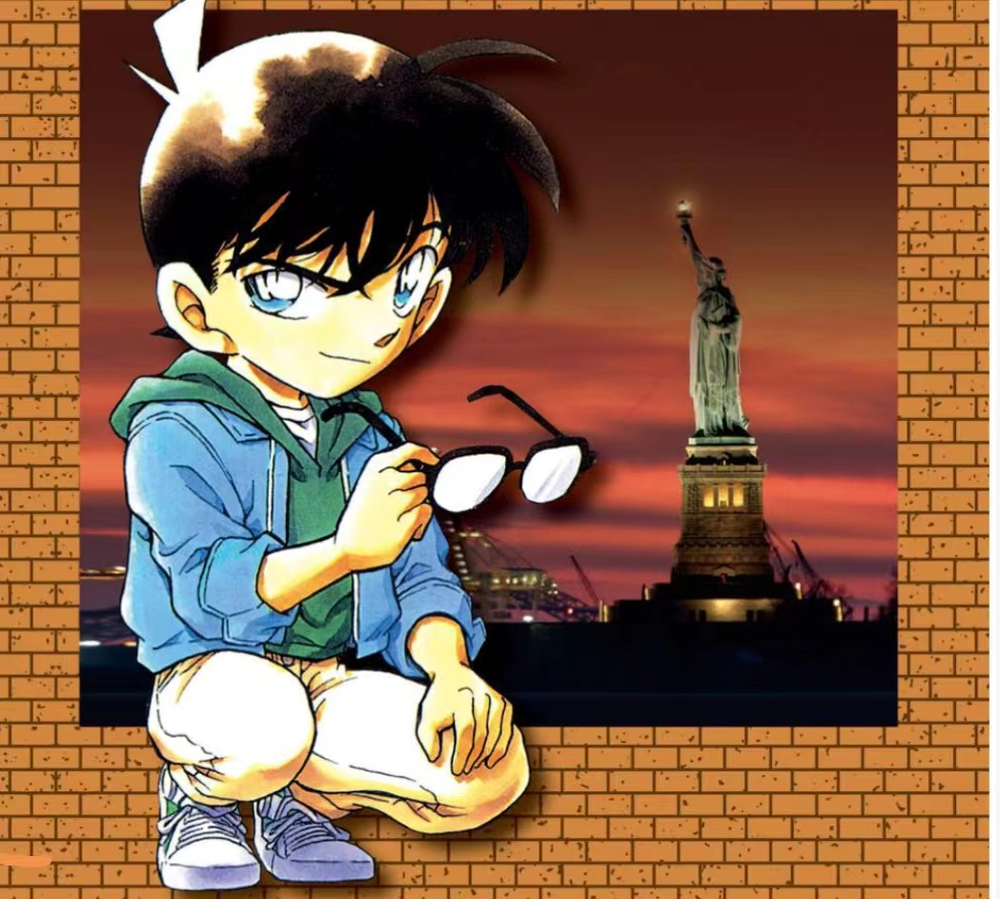

注意：本贴多为本人的主观臆测，可以当成一种暴论，并无实质证据，均为本人基于剧情事实与毛利兰本身的行为逻辑进行的推测，还请大家理性探讨。
两个未成年的高中生只身前往异国他乡，其中一人（还是女性）现在并没有当时要前往投奔的、会收留照顾他们的成年监护人的联系方式，（当时她甚至连新一的联系方式都没有，只能发邮件，不过考虑到当时新一可能也没有手机，所以先不予置评）。
甚至还可能推理出：一个有着东方面孔的亚洲籍未成年女性，在美国独自一人的时候，她可能联系不上自己在当地的监护人。（甚至纽约还有会攻击年轻女性的公路恶魔的传闻）
但是工藤夫妇明显不是这样不负责任的人，因此，我目前对于此处有三种解释：
1、工藤夫妇认为在美国兰会全程跟着新一，不用给联系方式
先不说工藤夫妇会不会喜欢这种全程依赖儿子的儿媳，但就这种行为表现就说明工藤夫妇并没有与兰深交的打算，毕竟根本无法自如联系，全靠工藤新一。现实里这种家庭怎么说呢......相处起来也不会太齐乐荣荣就是了。
但这中解释还是显得工藤夫妇有些不负责任，所以整体可能性较小。
2、但是小兰没记住
这种就emmmmm........可能性不大，但也解释的通。毕竟兰有一个记性好的人设，尤其是工藤夫妇还是青梅竹马的父母，而且自己还在纽约事件后喜欢上了新一，没道理不去记这些。但硬要解释的话，也可以说是兰认为这些不重要，没必要去记，怎么说呢，符合她一贯自我的人设，但也让SR更难磕了。
3、小兰曾经有，但是后来没有了，可能是工藤夫妇更换了联系方式，也可能是因为某些原因丢失了号码。
对于这种解释，可以解读出的是兰与工藤夫妇并不熟，甚至可以说在纽约之后就没有再联系过，这种目前来说我认为是最合理的。（不过这里我要吐槽毛利兰对于工藤新一失联的态度，只会在那里哭，你倒是做点啥啊，找他父母啊，实在不行找警察啊！别说啥联系不上，阿笠博士连工藤家钥匙都有，你哪怕是找博士要工藤夫妇的联系方式我都算你努力过了。）
由此我们可以看出兰与工藤夫妇的关系：真不熟。但是也因此出现了另一个疑点：工藤夫妇为什么会让一个自己不熟的儿子的同学来美国找自己呢？
对于纽约之行，新兰党普遍给出的观点是：有希子带新一和小兰来美国玩。
但是，真的是有希子“主动”带兰来的吗？真的是工藤夫妇“主动邀请”小兰来自己洛杉矶的家的吗？
（注：以下均为本人基于漫画剧情以及兰的一些过往类似行为进行的主观臆测，还请各位理性探讨。）

帖主写这篇帖子的前因是在网上看双方撕逼的时候看到有些新兰党用“有希子带新一小兰去纽约玩”来认定“有希子喜欢小兰，和她关系很好”。但是在原著中有一个众所周知的点，就是毛利兰至今没有工藤夫妇的联系方式，但是这里就出现了一个不太符合常识的、但细思极恐的剧情漏洞：两个未成年的高中生只身前往异国他乡，其中一人（还是女性）现在并没有当时要前往投奔的、会收留照顾他们的成年监护人的联系方式，（当时她甚至连新一的联系方式都没有，只能发邮件，不过考虑到当时新一可能也没有手机，所以先不予置评）。
甚至还可能推理出：一个有着东方面孔的亚洲籍未成年女性，在美国独自一人的时候，她可能联系不上自己在当地的监护人。（甚至纽约还有会攻击年轻女性的公路恶魔的传闻）
但是工藤夫妇明显不是这样不负责任的人，因此，我目前对于此处有三种解释：
1、工藤夫妇认为在美国兰会全程跟着新一，不用给联系方式
先不说工藤夫妇会不会喜欢这种全程依赖儿子的儿媳，但就这种行为表现就说明工藤夫妇并没有与兰深交的打算，毕竟根本无法自如联系，全靠工藤新一。现实里这种家庭怎么说呢......相处起来也不会太齐乐荣荣就是了。
但这中解释还是显得工藤夫妇有些不负责任，所以整体可能性较小。
2、但是小兰没记住
这种就emmmmm........可能性不大，但也解释的通。毕竟兰有一个记性好的人设，尤其是工藤夫妇还是青梅竹马的父母，而且自己还在纽约事件后喜欢上了新一，没道理不去记这些。但硬要解释的话，也可以说是兰认为这些不重要，没必要去记，怎么说呢，符合她一贯自我的人设，但也让SR更难磕了。
3、小兰曾经有，但是后来没有了，可能是工藤夫妇更换了联系方式，也可能是因为某些原因丢失了号码。
对于这种解释，可以解读出的是兰与工藤夫妇并不熟，甚至可以说在纽约之后就没有再联系过，这种目前来说我认为是最合理的。（不过这里我要吐槽毛利兰对于工藤新一失联的态度，只会在那里哭，你倒是做点啥啊，找他父母啊，实在不行找警察啊！别说啥联系不上，阿笠博士连工藤家钥匙都有，你哪怕是找博士要工藤夫妇的联系方式我都算你努力过了。）
由此我们可以看出兰与工藤夫妇的关系：真不熟。但是也因此出现了另一个疑点：工藤夫妇为什么会让一个自己不熟的儿子的同学来美国找自己呢？
对于纽约之行，新兰党普遍给出的观点是：有希子带新一和小兰来美国玩。
但是，真的是有希子“主动”带兰来的吗？真的是工藤夫妇“主动邀请”小兰来自己洛杉矶的家的吗？
（注：以下均为本人基于漫画剧情以及兰的一些过往类似行为进行的主观臆测，还请各位理性探讨。）
和时代因素还是有关系的，早期漫画里面的生活方式还是以电话亭和座机为主的。早期的博士发明里面，就有类似手机功能的东西，算是高科技了。我只模糊经历过call机时代，不算太有发言权，但个人感觉当时电话联系似乎并不是交际的必须品，尤其这种国际电话，写信拜访在早期漫画都更常见一些。
但是这是一个很容易打的补丁，比如水族馆篇就把手机的补丁打了。但凡对门和柯妈戏份多一点，也不至于堂堂青梅竹马连个手机号都要不到。
但是这是一个很容易打的补丁，比如水族馆篇就把手机的补丁打了。但凡对门和柯妈戏份多一点，也不至于堂堂青梅竹马连个手机号都要不到。
2024-05-17 04:29 | 贴吧用户_aWCK422:回复 其它各种 :但是我记得纽约篇最后是有一个有希子和莎朗打电话的剧情的，有希子用的还是手机2024-05-17 09:54 | 颜馨酱℃:纽约篇算中期了吧2024-05-17 15:23 | 贴吧用户_GMSD67V:回复 颜馨酱℃ :纽约篇，01年创作的，漫画设定平成年代（1994）的时候日本已经有手机了，博士做的算是以偏中性耳环为基础的追求小型化和轻量化的便携功能机。

D 文化背景不一样，日本人（特别是十年前）没有中国人那么喜欢交换手机号。
2024-05-17 05:50 | 贴吧用户_aWCK422:但是在人已经在异国他乡的情况下，在当地负责照顾的人多少还是要给一下联系方式的吧，不然会被说不负责任的吧2024-05-17 06:16 | 贴吧用户_0Q8721R:回复 贴吧用户_aWCK422 :涟漪篇有希子带新兰两个人出去玩，毛利夫妇也是没去的，又不是第一次。2024-05-17 06:21 | 贴吧用户_aWCK422:回复 贴吧用户_0Q8721R :嗯……那次算在日本国内吧？我个人认为和在国外还是有一些差别的，尤其是当时剧情里还特意提到了在纽约有专门攻击年轻女性的公路恶魔的情况下，毛利兰单独在那里显得特别危险，所以感觉这里的剧情漏洞很大2024-05-17 09:52 | 颜馨酱℃:回复 贴吧用户_aWCK422 :国外一直挺乱的

其实就是让自己的儿子来玩，因为有希子是著名演员，和百老汇很多演员有交情，去纽约的当天晚上就是去百老汇看演出，可见是一开始就预订好的。
只不过角姐去是一个意外，小五郎在该章之初就说的很明白，当时去纽约，角姐是没有跟小五郎商量过，所谓“你们背着我私奔到纽约的那次”，而如果说有希子一开始就请了工藤新一和角姐两个人的话，以有希子的教养，是必定会先跟小五郎或妃英理联系并取得同意的，不可能出现小五郎都不知道的情况。那么答案就呼之欲出了，也就是有希子最初只是叫自己的儿子工藤新一去美国看百老汇演出，然后工藤新一和毛利兰说了这件事，毛利兰立即开启“甜甜圈”模式，摆出和她从园子那里听说自己要参加和歌星的卡拉OK聚会时的同款表情，让工藤新一只能“主动”提出邀请，然后连通知小五郎都来不及就直接去赶飞机了。当时日本和美国之间是旅行免签的，只要有护照，说明是旅行，什么时候回来就可以快速登机。而且这次一开始也说是有希子全程买单，毛利兰等于就是蹭人家的旅行。
只不过角姐去是一个意外，小五郎在该章之初就说的很明白，当时去纽约，角姐是没有跟小五郎商量过，所谓“你们背着我私奔到纽约的那次”，而如果说有希子一开始就请了工藤新一和角姐两个人的话，以有希子的教养，是必定会先跟小五郎或妃英理联系并取得同意的，不可能出现小五郎都不知道的情况。那么答案就呼之欲出了，也就是有希子最初只是叫自己的儿子工藤新一去美国看百老汇演出，然后工藤新一和毛利兰说了这件事，毛利兰立即开启“甜甜圈”模式，摆出和她从园子那里听说自己要参加和歌星的卡拉OK聚会时的同款表情，让工藤新一只能“主动”提出邀请，然后连通知小五郎都来不及就直接去赶飞机了。当时日本和美国之间是旅行免签的，只要有护照，说明是旅行，什么时候回来就可以快速登机。而且这次一开始也说是有希子全程买单，毛利兰等于就是蹭人家的旅行。
2024-05-17 10:53 | 🌐之徙:有道理的，这么说来涟漪篇也是这种情况，我一开始还以为是有希子邀请，现在确实更像是小兰甜甜圈式蹭车。2024-05-18 13:11 | 贴吧用户_QJNGZAy:∠姐从来是喜欢蹭人家便宜的。而且蹭不到也不睡蹭不到，一边给自己树立清高形象一边抱怨工藤新一看不出自己没钱。
受连载当时的科技发展，没有联系方式我觉得正常。放在现在来看确实不太正常。但可以用水族馆篇的补丁勉强圆过去。即小兰原本有有希子的联系方式，可以是为了去美国特地给的，也可以是原本就有的。但是小兰的手机掉水沟了，所以现在又没有联系方式了。
很难想象有希子在不通知毛利夫妇的情况下带小兰出国，感觉是73为了体现新兰关系好不小心搞出的剧情bug
纽约篇新一有没有不知道，反正按照水族馆，小兰的手机是“前不久买的”；则初中时肯定没有手机
①只要在可以活动的范围玩就可以了，除非大白天遇到枪击案
②记住了，但是没有完全记住，是后来才想起来的
③上面提过，手机是水族馆前不久的，而且联系人只有妈妈，园子，小五郎（不确定）
①只要在可以活动的范围玩就可以了，除非大白天遇到枪击案
②记住了，但是没有完全记住，是后来才想起来的
③上面提过，手机是水族馆前不久的，而且联系人只有妈妈，园子，小五郎（不确定）
九十年代初只有固定电话吧，手机没有普及 。另外我不认为有希子讨厌兰解，作为儿子的青梅竹马，有希子一个成年人和14岁的小女孩不可能较劲，但是有希子本人肯定不欣赏兰解，因为她们两个性格差别很大。
。另外我不认为有希子讨厌兰解，作为儿子的青梅竹马，有希子一个成年人和14岁的小女孩不可能较劲，但是有希子本人肯定不欣赏兰解，因为她们两个性格差别很大。
。另外我不认为有希子讨厌兰解，作为儿子的青梅竹马，有希子一个成年人和14岁的小女孩不可能较劲，但是有希子本人肯定不欣赏兰解，因为她们两个性格差别很大。有希子見過世面的人，不會跟毛利蘭一般見識，就表面功夫，日本人最會的
有希子可能是觉得没必要给吧，如果按照楼上座机这种设定。如果没有对方家里的电话，其实更能体现出关系的疏离。
其实我觉得这方面不必细究，因为分析纽约篇不能站在角色角度而是得站在创作者角度。
新兰的终点本身应该是洛杉矶，完全可以描写洛杉矶发生了什么，但是被临时叫去了纽约，为什么？因为青山要用金苹果这个故事，而纽约又被称为金苹果。金苹果这个意向才是最重要的，青山不惜用了五话一样的标题加城市转变来划重点。
故事背景设定完毕，基于故事必须发生在纽约，新兰之前写过在去洛杉矶的飞机上，加之莎朗出场需要有希子这个媒介，整个基本故事就诞生了，并不是有希子基于什么原因让新兰来的。
新兰的终点本身应该是洛杉矶，完全可以描写洛杉矶发生了什么，但是被临时叫去了纽约，为什么？因为青山要用金苹果这个故事，而纽约又被称为金苹果。金苹果这个意向才是最重要的，青山不惜用了五话一样的标题加城市转变来划重点。
故事背景设定完毕，基于故事必须发生在纽约，新兰之前写过在去洛杉矶的飞机上，加之莎朗出场需要有希子这个媒介，整个基本故事就诞生了，并不是有希子基于什么原因让新兰来的。